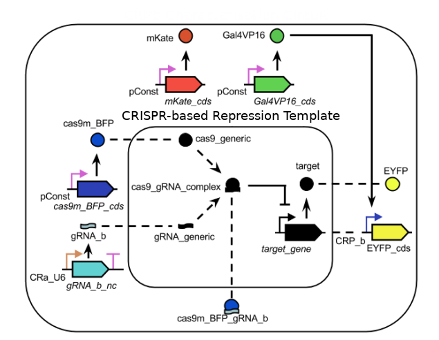

/* Welcome to the SBOL-JS Introductory Tutorial!
This interface is for learning how to use the Javascript
libraries for SBOL: SBOL-JS.
As a test case, the chapters on this page will contain the instructions for the
creation of the following CRISPR ciruit:
These instructions can be found with more detail here.
Simply click on Chapter 1 to start with, and then
use the terminal on the right to follow instructions!
*/
| Type JavaScript | Output Timing: 0.001 s |